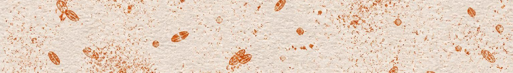

Kiln Bakehouse · Stone-milled, wood-fired
Baked daily from 06:00. When it is gone it is gone, which is the whole business model.
Bread
| Loaf | Flour | Whole | Half |
|---|---|---|---|
| Kiln sourdough | Type 85, 30% wholemeal, 22 h prove | 5.20 | 2.80 |
| Dark rye | 100% rye, 48 h, no wheat | 6.40 | 3.40 |
| Seeded barley | Barley and spelt, linseed, oat crust | 5.80 | 3.10 |
Pastry
| Item | Notes | Each | Three |
|---|---|---|---|
| Croissant | Laminated over three days | 3.20 | 8.50 |
| Damson and almond | Last of the orchard fruit, to mid-November | 3.80 | 10.50 |
| Cardamom knot | Saturdays and Sundays only | 3.60 | 9.80 |
Counter
Filter coffee, rotating single origin — 2.80 and 3.40. Soup with a heel of yesterday’s loaf from 12:00, 6.50, until it runs out.
Baked in a room with wheat in the air. Ask at the counter for the allergen sheet.